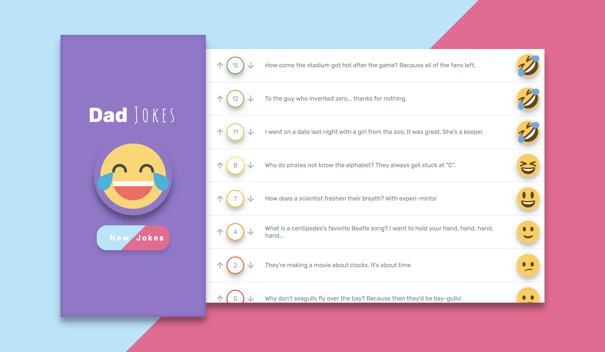

React Lifecycle Exercise
Part I - Deck of Cards
Build an app that displays a deck of cards, one card at a time. When the page loads, send a request to https://deckofcardsapi.com/api/deck/new/shuffle to create a new deck. Store the Deck ID it gives you, so you can make further requests to retreive each card image. Add a button to your app that allows a user to draw a new card.
When a user clicks the button, send another request to the API, this time to https://deckofcardsapi.com/api/deck/${deck_id}/draw/. (make sure to use your actual deck ID). Use the data included in the response to display a new card image, and make sure to include an informative alt attribute.
Every time the user clicks, the app should display a new card until the deck is empty. Make sure to tell the user there are no cards left!
Here’s how this might look (with styling added):

Part II - CheeZJokes App
Build an app that lets people view and vote on cheesy jokes. To generate jokes, you’ll use the ICanHazDadJoke API.
{kind=link}
When the page loads, it should fetch 10 jokes.
Your application should list the jokes, along with a “vote-up” button, a “vote-down” button, and the net score for each joke. Users can vote, and the net score should update.
Further Study
- When jokes are loading, display a loading spinner or message notifying the user that the jokes are being loaded. This should hide once the jokes have finished loading.
- Make sure that there are no duplicate jokes shown.
- Show the jokes sorted by net score, and update this as the scores change.
- Store the list of jokes, with votes in local storage. When users visit the app, it should show saved jokes, rather than fetching new jokes. However, the user should still be able to generate new jokes via the button, and these new jokes should replace the ones in local storage.
- Add CSS styling for the joke app, including FontAwesome thumbs-up/down images for the voting buttons. Make the loading spinner using FA — you can spin any icon of theirs.